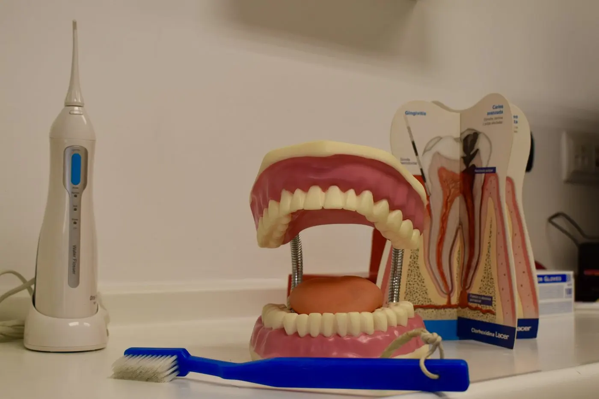
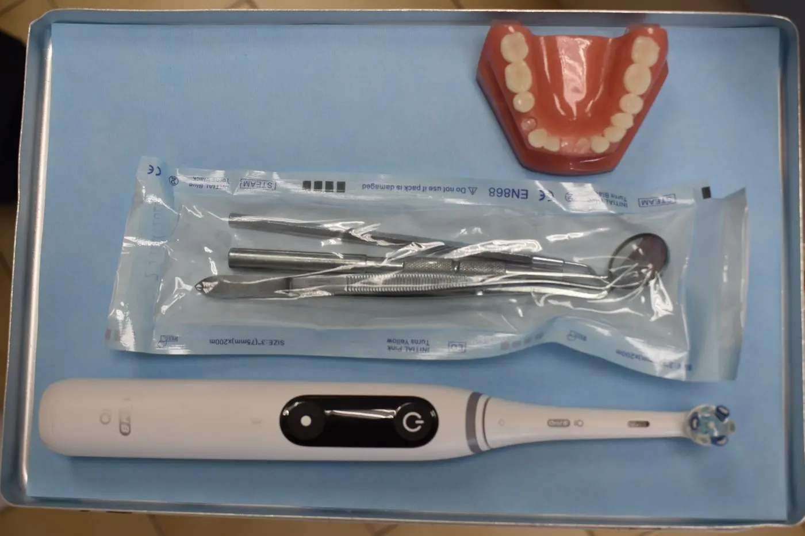
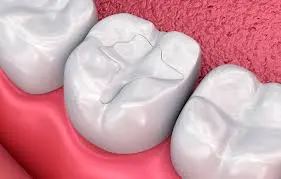
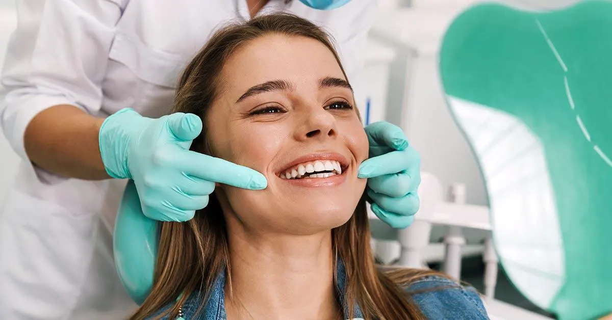

Implantes dentales
Soluciones para recuperar dientes perdidos con planificación personalizada, materiales fiables y seguimiento cercano.
Más información →Odontología para niños y adultos en Opañel/Oporto. Consulta los servicios principales de la clínica y solicita una valoración personalizada.
Soluciones para recuperar dientes perdidos con planificación personalizada, materiales fiables y seguimiento cercano.
Más información →.avif)
Tratamientos para mejorar la alineación dental y la mordida en niños, adolescentes y adultos.
Más información →
Cuidado dental para niños con un trato tranquilo, prevención y educación en hábitos bucodentales.
Más información →
Valoración de dolor mandibular, apretamiento dental, desgaste y molestias relacionadas con la articulación temporomandibular.
Más información →
Tratamientos orientados a conservar dientes dañados o infectados, aliviar molestias y evitar extracciones cuando es posible.
Más información →
Diagnóstico y cuidado de encías inflamadas, sangrado, sarro y pérdida de soporte dental.
Más información →
Opciones para mejorar el aspecto de la sonrisa de forma natural, cuidando la salud dental como prioridad.
Más información →
Alternativas removibles o fijas para recuperar función, comodidad y estética cuando faltan varias piezas.
Más información →
Revisiones, empastes, prevención, diagnóstico y tratamientos conservadores para mantener una boca sana.
Más información →.avif)
Higiene profesional para eliminar placa y sarro, cuidar las encías y prevenir problemas bucodentales.
Más información →
Procedimientos quirúrgicos dentales con valoración previa, planificación y explicación clara de cada paso.
Más información →Si no tienes claro qué tratamiento necesitas, pide una cita de valoración. El equipo revisará tu caso y te explicará las opciones disponibles.
Pedir citaLlamar ahoraDepende del diagnóstico. La clínica valora cada caso antes de recomendar un tratamiento concreto.
Sí. Puedes pedir una revisión para identificar el problema y recibir orientación profesional.
Puedes llamar a la clínica para explicar la molestia y consultar disponibilidad de cita.
Sí. La odontopediatría y la prevención infantil forman parte de los servicios de la clínica.